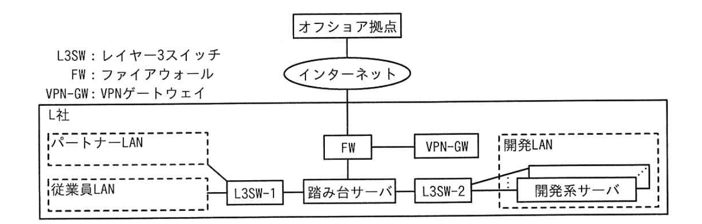
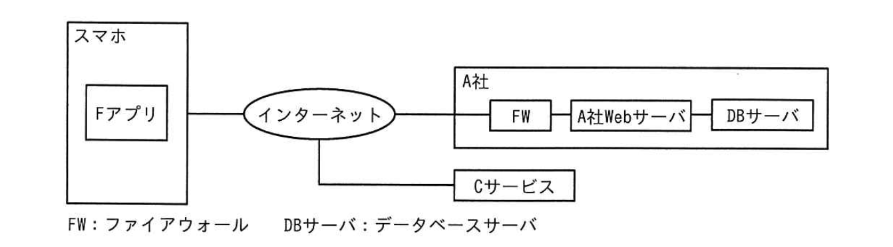
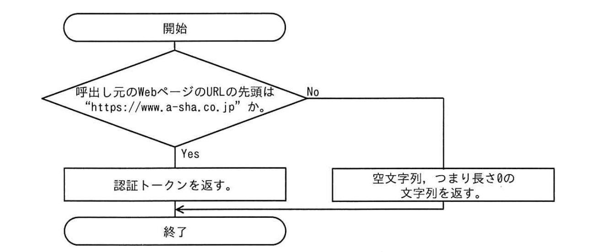
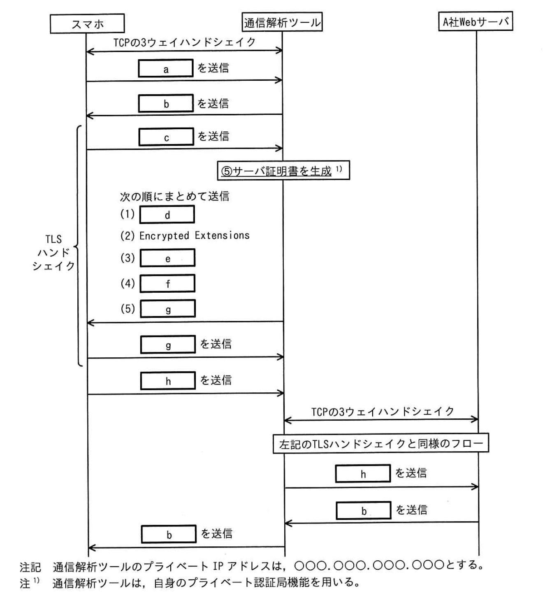

問1 サプライチェーンのリスク対策
L 社は、金融業向けにシステムを開発している従業員1,000名の企業である。L社のシステム開発プロジェクトでは、プラットフォームGというソフトウェア開発プラットフォームを利用している。プラットフォームGの機能には、ソースコード及び開発ドキュメントのバージョンを管理する機能，CI/CD パイプラインの管理機能，開発対象のSBOM 作成機能がある。CI/CD パイプラインの管理機能を利用してテストやリリースの自動実行が可能である。開発対象の SBOM 作成機能はプラットフォームG上のリポジトリサーバ内のソースコード及びライブラリをシステム構成要素として一覧化する。開発対象の SBOM 作成機能は現状では特に利用していない。また，L社が採用している SAST ツール（以下，ツールFという）は、プラットフォームG上のリポジトリサーバや開発者の端末にインストールして利用するツールであり、コンパイルエラーが解消されたソースコードに対してだけ正常な検査が可能である。プラットフォームGのCI/CDパイプラインの管理機能で、ツールFでのチェックを自動的に行うようなワークフローを構成することができる。 近年，業務委託先でのセキュリティ侵害に起因する情報セキュリティインシデントが大きく報道されるなど外部環境が変化し、L社経営陣もサプライチェーンリスク対策の強化を考えるようになった。経営陣の指示で、情報セキュリティ担当のBさんは，サプライチェーンリスク対策を強化したセキュリティガイドライン（以下、ガイドラインという）を作成し、全てのシステム開発プロジェクト及び運用サービスを点検することになった。Bさんは、L社が契約しているセキュリティコンサルタントで情報処理安全確保支援士（登録セキスペ）のD氏にガイドラインの作成について相談することにした。
[ガイドラインの作成] 次は、ガイドラインの作成についてのBさんとD氏の会話である。
- Bさん
- ガイドラインはどのような構成がよいでしょうか。
- D氏
- システムライフサイクルの工程に合わせるのがよいでしょう。L社のシステム開発業務を踏まえて、調達、開発、リリース・デプロイ，運用の工程に分類し、さらに全ての工程で共通するような項目も抜き出して記載しましよう。
Bさんは、ガイドライン案を表1のように作成した。
| 工程 | 項番 | 内容 |
|---|---|---|
| 共通 | 1 | システムに関連する情報資産を，業務委託先と共同で利用するものも含めて一覧化し、管理すること。一覧化すべき情報資産は、次のとおりである。 ・サーバ ・ネットワーク機器 ・ソースコード ・リポジトリ内のライブラリ |
| 2 | 各工程で利用するシステムのアカウントは、業務委託先を含めて必要な利用者にだけ発行すること。その際、責任追跡性を確保するためにアカウントの利用者を特定できるようにすること | |
| 3 | 一覧化した情報資産ごとに、パッチ適用状況など最新の構成情報を把握すること | |
| 調達 | 4 | 業務委託先の企業を、再委託先まで含めて一覧として管理すること |
| 5 | 業務委託先でのセキュリティ管理に関する要件を、業務委託先との契約に含めること | |
| 開発 | 6 | ソフトウェア開発プラットフォームなどの開発環境は、アクセス制御を行い，必要な利用者だけがアクセスできるようにすること |
| 7 | 開発環境にアクセスしたアカウントを特定できるようにアクセスログを記録すること | |
| 8 | 開発したソフトウェアのソースコードは、人手によるレビュー及びSASTツールによるチェックを行うこと | |
| 9 | システムの仕様，機能を精査し、不要な機能やセキュリティ上の欠陥がないことを設計書から確認すること | |
| リリース・デプロイ | 10 | 開発したソフトウェアのSBOMを作成すること |
| 11 | リリースしたソフトウェアは、リリースバージョンを管理すること | |
| 12 | システムの稼働環境において，稼働状況を監視すること | |
| 運用 | 13 | システムの稼働環境において、要件に応じたアクセス制御を実施すること |
| 14 | システムの運用端末がある部屋は、要件に応じた入退室管理を実施すること | |
| 15 | インシデント対応手順書を作成すること |
次は、ガイドライン案についてのBさんとD氏の会話である。
- Bさん
- ①セキュリティ・バイ・デザインの考え方を一部取り入れました。その他，留意すべき点などはありますか。
- D氏
- 項番 5には、②業務委託先が再委託を行う場合に備えて、L社と業務委託先D氏との間の契約書に明記すべき事項を具体的に示しておくとよいでしょ
Bさんが修正したガイドライン案を経営陣に報告したところ、過去に外部ベンダーでのセキュリティ侵害に起因してL社でインシデントが何度か発生したことがあったので、それらのインシデントに対するガイドライン案の有効性を評価するように指示があった。
[過去のインシデントの確認] Bさんは、過去のインシデントに対するガイドライン案の有効性を評価することにした。次は、1件目のインシデントについてのD氏とBさんの会話である。
- D氏
- はじめに、インシデントの内容を確認しておきましょう。
- Bさん
- L社が開発し，運用していたシステム（以下、システム◎という）では、古い WebブラウザをサポートするためのJavaScript（以下、スクリプトPという）を利用していました。スクリプトPは、広く使われていたT社製のものです。スクリプトPは、T社が運営するサーバ（以下、サーバTという）に配置され、システムQにアクセスした Web ブラウザがスクリプトPを都度読み込むようにシステムQは構成されていました。ある日、サーバTが乗っ取られてしまい，スクリプトPが改ざんされたことによって、システムQへの利用者のアクセスが悪意のあるWebサイトにリダイレクトされてしまいました。
- D氏
- 発見の経緯を教えてください。
- Bさん
- システムQの利用者からの問合せで気付き、対策を実施しました。時の情報セキュリティ担当は、サーバTが侵害されたというニュースは知っていましたが、システムへのアクセスが影響を受けることを把握していませんでした。
- D氏
- 他社の発表によると、③スクリプトPを利用していたシステムでもスクリプトPの配置方法が違えば、影響を受けなかったようですね。
- Bさん
- はい。違う配置方法にするという対策もありました。しかし、Web ブラウザ開発元での古い Web ブラウザの公式サポートが終了していたことから、当社の対策としては、④システムのソースコードに変更を加えて、古い Webブラウザのサポートを終了しました。
- D氏
- 1件目のインシデントについてはおおむね理解できました。
- Bさん
- 案の項番10が、1件目のインシデントを未然に防ぐために有効ではありませんか。
- D氏
- いいえ、開発対象の SBOM作成機能でSBOMを作成していたとしても、スクリプトPはSBOMに含まれないので，インシデントは防げなかったでしょう。
Bさんは、⑤SBOM以外の手段で、システムが利用している外部のスクリプトを把握できるよう、案の項目を一つ修正した。D氏とともに、そのほかの過去のインシデントについても案を評価したところ、案は有効であると確認できたので、経営陣に報告して承認を得た。
[ガイドラインを用いた点検の実施］ ガイドラインを用いて、現在進行中の全てのシステム開発プロジェクト及び運用サービスを点検することになった。最初の点検対象は、システムSの開発プロジェクト及び運用サービスである。Bさんがプロジェクト計画書、運用計画書などからまとめたシステムSの開発プロジェクト及び運用サービスの概要を図1に、開発環境の構成図を図2に示す。
1.システムSは、L社が3年前からS銀行向けに提供しているインターネットバンキングシステムである。運用と追加機能の開発を社が請け負っている。
2．セキュリティ監視を情報セキュリティ会社のN社に委託している。開発は、L社従業員，社に派遣された派遣エンジニア及び他の業務委託先の従業員が行っている。なお、運用ツールなど一部のソフトウェアはN社が開発することがある。
3．L社がシステムSを運用するためにS銀行内にセキュアルームが用意されている。セキュアルームへの入室にS銀行が貸与するカードでの認証を必須とする入退室装置が導入され、S 銀行の管理者及びL社の運用担当者しか入室できないようになっている。
4.派遣元及び業務委託先との間では、L社のセキュリティポリシーの順守とプロジェクトでのセキュリティルールの順守について契約書で定めている。N社の業務委託契約には、N社内のセキュリティ管理についての実施事項及びN社が再委託を行わないことを明記している。N社での委託契約の順守状況を定期的な監査によって確認する。
5.開発時に、要件定義段階での脅威モデリング及び設計段階での設計書の確認を行い、不要な機能やセキュリティ上の欠陥がないことを確認する。
6.プラットフォームGに設計書を格納する。開発したソフトウェアのSBOMは作成しない。
7.開発したソフトウェアのソースコードは、開発リーダーがレビューして承認する。開発したソフトウェアをリリースする際は、開発リーダーがリリースバージョンを更新する。
8．資産管理台帳にサーバ及びネットワーク機器の一覧を担当者が入力する。
9.システムSに組み込む OSSライブラリは、開発者が取得する。OSS ライブラリは資産管理台帳に入力しない。
10．開発は、L社内及びオフショア拠点で行い，次のLANに接続した端末で実施する。
・L社内に用意した従業員 LAN・L社内に用意したパートナーLAN・オフショア拠点にある業務委託先の LANまた、テストなどのためにシステム Sの開発系サーバがある LAN（以下、開発LANという）にアクセスする際には一旦，踏み台サーバにログインする。踏み台サーバには、L社，業務委託先など会社ごとに発行した共用アカウントでログインするが、ログインごとに、利用記録簿に記載する。開発LAN 上のサーバには製品仕様上、アクセスログが取れないものもある。
11.インシデント発生時にL社のシステムSの担者に連絡するための業務フローがインシデント対応手順書に定められており、システムSの担当者がインシデントのハンドリングを行う。
12.ツールFが開発者の端末とプラットフォームGにインストールされている。

図2 システムSの開発環境の構成図（抜粋）
Bさんは、システム Sの担当者へのヒアリング前に論点を整理しておこうと考え、表1の各項番について、図1に基づき、対策状況を確認した。結果は表2のとおりである。
| 工程 | 表1の項番 | 確認した図1の項番 | 確認結果１又は問題点 |
|---|---|---|---|
| 共通 | 1 | 8, 9 | OSSライブラリを台帳管理していない。 |
| 2 | [ア] | [a] | |
| 調達 | 5 | [イ] | 問題なし。 |
| 開発 | 9 | [ウ] | [b] |
| リリース・デプロイ | 10 | 6 | 開発したソフトウェアについてSBOMを作成していない。 |
| 運用 | 15 | [エ] | [c] |
Bさんは，システムの担当者であるCさんにヒアリングを行った。
[SBOM についての確認] 次は、表1の項番 10についてのCさんとBさんの会話である。
- Cさん
- システム Sのソフトウェア構成は設計書で把握できると考えていますが、SBOMの作成も必要でしょうか。
- Bさん
- SBOMを利用すると、⑥将来、弱性管理がしやすくなります。プラットフオームGで作成することができます。
- Cさん
- なるほど。それでは、SBOMの作成を検討します。
[開発工程のセキュリティ対策についての確認] Bさんは、表1の項番7,8について確認した。次は、そのときのBさんとGさんの会話である。
- Bさん
- 表1の項番7の対策は実施できていますか。
- Cさん
- オフショア拠点から開発 LAN へのアクセスについては VPN-GW でアクセスログを取得できているものの、社内からのアクセスについては取得できていません。
- Bさん
- アクセスログは図2中の[d]で取得するのがよいでしょう。
- Cさん
- 分かりました。
- Bさん
- 表1の項番8の対策はどのようにしていますか。
- Cさん
- 現在はソースコードの変更内容を開発リーダーがレビューしています。
- Bさん
- 開発リーダーによるレビューに加えて、ツールFでチェックするのがよいでしょう。
- Cさん
- 開発フローのどこでツールFを実行するのがよいでしょうか。
- Bさん
- ツールFの特性を踏まえると、図3のシステムSの開発フロー中の（あ）又は（い）で実行するのがよいと考えられます。⑦それぞれ利点が異なります。

図3 システムSの開発フロー
ソースコードのテスト環境へのリポジトリへのデプロイアップロード注 1）複数の開発者が変更した内容を反映させた上でコンパイルエラーが出ないことを確認している。 図3 システムSの開発フロー
ガイドラインを用いた点検の後，L社のサプライチェーンリスク対策は強化された。
設問1[ガイドラインの作成]について答えよ。 （1） 本文中の下線①について、どのような考え方か答えよ。 （2） 本文中の下線②について、明記すべき事項を、50字以内で答えよ。
設問2 [過去のインシデントの確認］について答えよ。 （1） 本文中の下線③について、影響を受けない配置方法を答えよ。 （2） 本文中の下線④について、加えた変更を、具体的に答えよ。 （3） 本文中の下線⑤について、修正した項番と修正内容を答えよ。
設問3 [ガイドラインを用いた点検の実施]について答えよ。 （1） 表中の[ア]〜[エ]に入れる適切な項番を答えよ。 （2） 表2中の[a]〜[c]に入れる適切な字句を答えよ。
設問4 本文中の下線⑥について，脆弱性管理がしやすくなる理由を，具体的に答えよ。
設問5[開発工程のセキュリティ対策についての確認]について答えよ。 （1） 本文中の[d]に入れる適切な字句を、図2中の名称で答えよ。 （2） 本文中の下線⑦について、（あ），（い）で実行する利点を、それぞれ40字以内で答えよ。
問2 脆弱性管理
M社は、従業員 3,000名の情報サービス業を営む企業である。ソフトウェアの開発・販売を行っており、自社ホームページのほか、販売したソフトウェアのサポート用Webサイトなど複数のWebサイト（以下、Webサイトをサイトという）を保有している。M社では、メンテナンスのために管理者が自宅や外出先からサイトにリモートアクセスする。セキュリティに関する問合せ窓口は、情報システム部が担当している。 M社が保有するサイトのうち、重要なサイト（以下、重要サイトという）は、プラットフォームに対する弱性診断（以下、PF 診断という）及びWebアプリケーションプログラムに対する弱性診断（以下、Web アプリ診断といい、PF診断とWeb アプリ診断を併せて両診断という）を初回リリース前に実施するルールになっている。 初回リリース後の両診断の実施については任意である。重要サイトの指定は、扱う情報の重要性、停止による影響などを勘案し、各サイトの所管部門が判断している。 重要サイト以外のサイトに対する両診断の実施は任意である。 両診断は、情報システム部の選定した専門ベンダーP社に依頼して実施、又は情報システム部の選定した弱性診断ツール（以下，診断ツールという）を用いて各サイト担当者が実施する。ただし、緊急の場合、情報システム部が実施することもある。P社のWebアプリ診断は、弱性が実際に悪用できることを確認した上で報告してくれるので、評判がよい。 弱性は Gritical， High， Medium， Low,Noneの5段階の深刻度レベルに分類される。P社に依頼して診断を行う場合は、P社から深刻度レベルの報告を受ける。深度レベルは、情報システム部が選定した診断ツールの場合はCVSS 基本値によって分類される。P社の診断では、P社が独自の知見でCVSS 基本値を基に値を変え、分類している。M社では，深刻度レベルがHigh 以上の場合は速やかな修正を必須とし、それ以外は所管部門が対応要否を判断する。
[脆弱性の報告］ ある日，M社のキャンペーンサイト✕（以下，サイト✕という）のキャンペーンページに SQL インジェクションの弱性が存在しているという指摘が問合せ窓口に報告された。報告内容についてサイト担当者に確認したところ、弱性が存在する可能性があるとの回答であった。サイトは重要サイトに指定されていなかった。サイトXの仕様を図1に示す。
・Web サーバ、Web アプリケーションサーバ及びデータベース（以下，DBという）サーバから成る。
・キャンペーン情報を DB サーバに格納している。
・顧客情報は保有していない。
・キャンペーンページのURLのクエリパラメータにコンテンツ番号が含まれている。
URL 例：https://site-x.m-sha.co.jp/info?article=20250101・コンテンツ番号が DB サーバ上に存在しない場合、又は SQLが構文エラーになる場合は、“コンテンツがありません”というメッセージを返す。
・Web アプリケーションプログラムにおいて、クエリパラメータ article の値は SQLでの検索では数値型として扱われる。
情報システム部のEさんとJ課長は、報告内容を確認するために、情報システム部が診断ツールを実行する旨をサイトXの担当者に伝えた。 Webアプリ診断用の診断ツールを該当ページに対して実行したところ、深刻度レベルがHighのSQLインジェクションの脆弱性が検出された。SQLインジェクションの脆弱性検出時のクエリパラメータ及び応答を表1に示す。
| クエリパラメータ | 応答 |
|---|---|
| article=20250401 | 2025年4月1日のキャンペーンのコンテンツが返される。 |
| article=20250401' | a |
| article=202504011%20and%201=a | b |
| article=20250401%20and%20'a'='b | c |
| article=20250401%20and%201=0 | d |
| article=20250401%20and%201=1 | e |
Eさんは、速やかにサイト担当者に連絡し、インターネットからサイトにアクセスできないようネットワーク構成を変更した上で、該当するプログラムを修正するよう依頼した。これに対してサイト✕の担当者は、“重要情報の漏えいなどの問題が発生することはない。DBには重要情報もない。サイトXにアクセスできないようにする必要はない。”と主張した。それに対してEさんは、“本弱性はブラインド SQLインジェクションの弱性に該当する。そのため、表1と同様の手法を用いることによって、DB のテーブル名が特定できることになる。”と説明した。Eさんは、DB のテーブル名を使うと攻撃者が次にどのような攻撃を行えるかを説明し、対応する必要性を説いた。これを受け、迅速に対応が行われた。
[施弱性が存在していた状況の確認と一斉診断の実施] 対応完了後，情報システム部では、公開サイトは全て重要サイトに指定するようにルールを変更することにした。同時に、M社が保有する全ての公開サイトに対する一斉の両診断（以下，一斉診断という）を実施することにし、その診断をP社に依頼した。診断対象サイトの情報を表2に示す。
| サイト名 | サイト特性 | 社外利用者向けアカウントの作成方法 | 1日当たりのアクセス数 | 顧客情報有無 | 停止による影響 |
|---|---|---|---|---|---|
| サイトA | ECサイト | 利用者が作成 | 10,000 | 有 | 大 |
| サイトB | 業務サイト | 管理者が発行 | 3,000 | 有 | 中 |
| サイトC | 情報提供サイト | なし | 10,000 | 無 | 小 |
| ： | ： | ： | ： | ： | ： |
| サイトZ | （省略） | （省略） | （省略） | （省略） | （省略） |
診断の結果、深刻度レベル High 以上の脆弱性が検出されたサイトが数サイトあり、Medium以下の弱性が数十件検出されたサイトも多数あった。 サイトによっては、初回リリース時の両診断以降にアップデートや設定変更をしていないにもかかわらず、初回リリース時の両診断結果と今回の一斉診断結果が異なっている場合もあった。P社の診断は、決められた手順に従って行い、診断結果は技術レビューを行うので、診断員による差異はほぼないと、EさんはP社から聞いていた。また、初回リリース時の両診断では、サイトに不具合はなかったと報告を受けている。Eさんが、改めてP社に確認すると、診断結果が異なっていた要因は、[f]や[g]だった。これらのことから、Eさんは初回リリース後も定期的な両診断が必要であると結論づけた。
[PF 診断で検出された脆弱性] PF 診断で検出された胎弱性を表3に示す。
| サイト名 | 脆弱性ID | 脆弱性 | 深刻度レベル | CVSSv3基本値 | 補足 |
|---|---|---|---|---|---|
| サイトA | PA-1 | SSL/TLSサーバの暗号強度が弱く、推奨されていない鍵交換をサポート | Medium | 5.9 | |
| サイトB | PB-1 | OpenSSHでリモートから認証なしに任意のコード実行が可能 | High | 8.1 | CVE-20XX-XXXXX |
| サイトB | PB-2 | 管理者用のWebのログイン画面に認証試行が何回でも可能 | Medium | 5.3 | |
| サイトB | PB-3 | SSL/TLSサーバの暗号強度が弱く、推奨されていない鍵交換をサポート | Medium | 5.9 | |
| サイトC | PC-1 | SSH接続の安全性を低下させることが可能 | Medium | 5.9 | CVE-20YY-YYYYY |
| サイトD | PD-1 | （省略） | High | 7.2 | |
| サイトD | PD-2 | （省略） | Critical | 9.8 | |
| サイトE | PE-1 | （省略） | Medium | 6.5 |
弱性 PA-1とPB-3について、CRYPTREC が作成し、IPAが発行している "TLS 暗号設定ガイドライン Ver. 3.1.0”の“4.推奨セキュリティ型の要求設定”には、表4に示す鍵交換におけるビットセキュリティの基準を満たすよう記載されていた。そのため、サイトA及びサイトBは基準を満たす設定に変更することにした。
| 鍵交換プロトコル | 基準 |
|---|---|
| ECDHE | [h]ビットセキュリティ以上を満たす[i] |
| DHE | [j] ビットセキュリティ以上を満たす[k] |
脆弱性 PB-1は、管理者がメンテナンス用にリモートアクセスで使っているOpenSSHにおいて検出された。OpenSSH では、ログインが一定時間内に成功しないと、認証試行のタイムアウト処理が実行される。脆弱性 PB-1は、あるセキュリティベンダーの報告によると、認証試行のタイムアウト処理が同時に多数実行されると起き得る問題であり、認証試行の接続時間 （LoginGraceTime）の設定が120秒の場合、その間に100件試行されると、OpenSSH のログに "Timeout before authentication”という認証タイムアウトのメッセージが多数出力され、3～4時間で悪用に成功する可能性があるとのことだった。もしも、脆弱性を修正したバージョンのOpenSSHに更新できない場合には、次のいずれかを行う。
・トレードオフはあるものの，認証試行にタイムアウトを設けないようにサーバの設定を変更する。
・①サイト担当者が攻撃を早期に検知する方法を採用することによって被害を抑制する。
サイトBでは、OpenSSH の更新を行った。
脆弱性 PB-2は、送元IPアドレス制限が対策の一つだが現実的な運用が難しい。
代わりの対策として、ログイン画面のアカウントロックがあるが、採用する場合はロック解除の運用方法や実装について検討が必要である。サイトBでは、②アクセスのPCを認証する対策を採用した。
[Webアプリ診断で検出された施弱性] Web アプリ診断で検出された弱性を表5に示す。
| サイト名 | 脆弱性ID | 脆弱性 | 深刻度レベル | CVSSv3基本値 | 補足 |
|---|---|---|---|---|---|
| サイトA | WA-1 | 本来閲覧できない画面を閲覧可能 | Medium | 4.3 | 購入機能で、商品の詳細を閲覧するリクエストに含まれるパラメータitemの5桁の数字を変更することによって一般会員が本来閲覧できない商品の説明画面を閲覧できた。 CVSS:3.1/AV:N/AC:L/PR:L/UI:N/S:U/C:L/I:N/A:N |
| サイトB | WB-1 | 本来閲覧できない画面を閲覧可能 | Medium | 5.3 | 管理者用アカウントでログインし、発注確認機能のURLを確認後、一般利用者アカウントでログインし直し、WebブラウザのアドレスバーにURLを入力することによって、管理者用の画面を閲覧できた。この画面では、他人の発注情報が全て閲覧できた。 CVSS:3.1/AV:N/AC:H/PR:L/UI:N/S:U/C:H/I:N/A:N |
| サイトC | WC-1 | OSコマンドインジェクション | Critical | 9.8 | 問合せフォームが直接シェルに入力値を渡す作りになっていて、任意のOSコマンドが実行できた。ただし、管理者権限が必要な操作はできなかった。 |
弱性 WA-1とWB-1は、HTTPリクエストの内容を一部変更することによって本来開覧できない画面を閲覧できるという点では同じであるが、評価指標の値が異なる。 評価指標のうち、③Attack Complexity（AC）の値はそれぞれLとHであった。 弱性 WC-1について、④管理者権限が必要な操作ができなかったのは、サイトCの仕様どおりであった。サイトGの仕様を図2に示す。
1.Webサーバ及び Webアプリケーションサーバから成る。
2.DB サーバとの連携はしていない。
3.Webアプリケーションプログラムは、一般利用者権限の専用アカウントでプロセスを実行している。
4.問合せフォームに入力された値をメールコマンドで管理者宛てに送る。
5.問合せ内容がログに保存され、その中にメールアドレスなどの個人情報をもつ。
6.ログには特定のアカウントだけがアクセスできる。
[脆弱性評価方法の検討] 一斉診断が一段落したところで、情報システム部は弱性管理についての課題を議論した。対応の要否判断が不適切であったサイトや対応が遅すぎたサイトがあったので、J課長は、Eさんに新たな弱性評価方法を検討するよう指示した。 はじめにEさんが調査したところ、IPA のホームページに“脆弱性対応におけるリスク評価手法のまとめ”というレポートが公開されていたので，これを参考にすることにした。Eさんは、検討内容をJ課長に報告した。次は、その際のEさんと」課長の会話である。
- Eさん
- レポートでは、対応要の胎弱性を簡易的な1次評価で選び、さらに、2次評価で優先度を評価する手法が提案されています。
- J課長
- 1次評価は具体的にはどのような評価をするのか。
- Eさん
- 1次評価では、基本値と Exploit Prediction Scoring System （EPSS）値を用います。EPSS 値の代わりにCVSSv3の現状値を用いる方法もありますが、⑤現状値と EPSS 値を比べると、現状値は手間が掛かり、EPSS 値は手間が掛からないとされています。1次評価では図3のように脆弱性を領域図で4領域に分類します。

図3 1次評価の領域図
- J課長
- しきい値はどうするのか。
- Eさん
- しきい値Aは7.0に、しきい値Bは1%に設定しようと考えています。領域Iは対応不要とし、領域Ⅰ～Ⅲを2次評価の対象にします。
- J課長
- なるほど。では、そのしきい値に設定してみて、対応すべき施弱性に漏れが出るなどの問題があれば、しきい値を見直すことにしよう。
- Eさん
- はい。分かりました。
- J課長
- あとはEPSS 値を用いた脂弱性評価について、しきい値の見直し以外にも、[l]を継続的に行うことで被害を防ぐ助けになるだろう。
- Eさん
- 分かりました。
- J課長
- ところで、Webアプリ診断では、見つかった脆弱性のEPSS 値が報告されないことが普通だが、どのように評価するのか。
- Eさん
- ⑥P社のWebアプリ診断であれば、見つかった胎弱性のEPSS値は、しきい値Bよりも高いとみなすのが妥当であると考えられます。Webアプリ診断で検出される脆弱性を、全て領域IかⅢとみなそうと考えています。
- J課長
- その方法が安全だな。次に、2次評価はどうするのか。
- Eさん
- 2次評価は、環境値と先に評価した領域とを組み合わせた方法にしようと考えています。
- J課長
- 環境値を全て算出するのだな。
- Eさん
- 環境値の算出においては、現状評価基準の各評価指標を、“Not Defined””と設定することができます。環境評価基準での評価指標の値の判断は各サイト担当者に依頼します。そして、表6に示す対応優先度表によってS~Cの最終的な対応優先度を決定します。
| 領域 | CVSSv3環境値 | |||
|---|---|---|---|---|
| 0～3.9 | 4.0～6.9 | 7.0～8.9 | 9.0～10.0 | |
| Ⅰ,Ⅲ | C | B | A | S |
| Ⅱ | C | C | B | A |
- J課長
- 分かった。一斉診断の結果で幾つか評価して確認してほしい。
- Eさん
- 分かりました。
[対応優先度評価の実施] Eさんが2次評価を幾つか行った結果を表7及び表8に示す。
| PB-1 | PC-1 | PD-1 | PD-2 | PE-1 | |
|---|---|---|---|---|---|
| EPSS値（%） | 39 | 96.5 | 0.0 | 2.6 | 8.7 |
| CVSSv3環境値 | 8.1 | 7.7 | 5.7 | 8.0 | 6.5 |
| 対応優先度 | m | n | o | p | q |
| WA-1 | WB-1 | WC-1 | |
|---|---|---|---|
| EPSS値（%） | 対象外 | 対象外 | 対象外 |
| CVSSv3環境値 | 5.0 | 7.1 | 9.8 |
| 対応優先度 | r | s | t |
この運用によって、弱性対応の優先度評価がサイト担当者によらず適切かつ迅速にできるようになった。
設問1 表1中のに入れる応答を、解答群の中から選び、記号で答えよ。なお、解答は重複して選んでもよい。 解答群ア“コンテンツがありません”というメッセージが返される。 イ 2025年4月1日のキャンペーンのコンテンツが返される。 ウ サーバから応答が返されない。 エ 内部サーバエラーが返される。 設問2 本文中のに入れる適切な字句を、それぞれ 20字以内で答えよ。 設問3[PF 診断で検出された弱性]について答えよ。 kコに入れる適切な字句の組合せを、解答h（1） 表4中の群の中から選び、記号で答えよ。 解答群記号jikh112128鍵長曲線ア112128直線署名イ128112曲線鍵長ウ112128署名直線エ（2） 本文中の下線①について、検知する方法を、具体的に答えよ。 （3） 本文中の下線②について、採用した対策を、20字以内で具体的に答えよ。
設問2 本文中のに入れる適切な字句を、それぞれ 20字以内で答えよ。
設問3[PF診断で検出された脆弱性]について答えよ。 （1）表4中のh〜kコに入れる適切な字句の組合せを、解答群の中から選び、記号で答えよ。
| 記号 | h | i | j | k |
|---|---|---|---|---|
| ア | 112 | 曲線 | 128 | 鍵長 |
| イ | 112 | 直線 | 128 | 署名 |
| ウ | 128 | 曲線 | 112 | 鍵長 |
| エ | 128 | 直線 | 112 | 署名 |
（2）本文中の下線①について、検知する方法を、具体的に答えよ。 （3）本文中の下線②について、採用した対策を、20字以内で具体的に答えよ。
設問4[Webアプリ診断で検出された弱性]について答えよ。 （1） 本文中の下線③について、弱性 WA-1のAC がLと評価された評価根拠と脂弱性 WB-1のAC がHと評価された評価根拠を、それぞれ具体的に答えよ。 （2） 本文中の下線④について、該当するサイトCの仕様を、図2中の項番から選び、答えよ。
設問 5[弱性評価方法の検討】について答えよ。 （1） 本文中の下線⑤について、現状値は手間が掛かる理由と EPSS 値は手間が掛からない理由を、それぞれ 40字以内で答えよ。 （2） 本文中の[l]に入れる適切な字句を、15字以内で答えよ。 （3） 本文中の下線⑥について、妥当である理由を、30字以内で答えよ。
設問6 表7中及び表8中の[m]〜[t]に入れる対応優先度を答えよ。
問3 スマートフォン用アプリケーションプログラムの開発
A社は、撮影機器の販売や写真のプリントサービスを全国に 200店舗で展開する従業員2,000名の企業である。実店舗の運営に加え、インターネットを介して撮影機器の販売を行う ECサイト事業を有している。このたび、会員がスマートフォン（以下、スマホという）用アプリケーションプログラム（以下、スマホ用アプリケーションプログラムをスマホアプリという）を通じて，写真入りのカレンダーなどのグッズ（以下，フォトグッズという）を注文できるサービス（以下，E サービスという）を新規に開始することになった。E サービス用スマホアプリ（以下、Fアプリという）は国内で流通する主要なスマホ OSである 0S-aとOS-Bの過去5年以内に正式リリースされたバージョンをサポートする。
[E サービスの説明] E サービスは、Fアプリとサーバサイドのシステム群で構成される。Fアプリは、インターネットを介してEサービス用 Webサーバ（以下、A社Web サーバといい、FQDNはwww.a-sha.co.jpとする）及び大手クラウドサービスプロバイダC社のクラウドストレージサービス（以下、Cサービスという）との間でHTTPSを使用して通信する。フォトグッズの作成に使う写真は、「アプリからCサービスにアップロードする。 Eサービスのネットワーク構成を図1に，機能概要を図2に、Fアプリの画面構成を図3に、フォトグッズの注文処理の流れを図4に、Cサービスの仕様を図5に示す。

図1 Eサービスのネットワーク構成（概要）
1．新規会員登録機能
Eサービスを利用するための新規会員登録を行う。
2.ログイン機能
会員IDとパスワードでログインする。ログインした会員には、認証トークン 1）が払い出され、ログアウトするまでの間、Fアプリに保存される。認証トークンは、A社 Web サーバ上で会員のセッションを識別するために使用する推測困難な値である。
3.フォトグッズ注文機能
Fアプリ上でフォトグッズを注文する。ログイン済み会員だけが利用できる。
なお、フォトグッズは、指定したA社の実店舗で受け取ることができる。
4.キャンペーン案内機能
キャンペーンの Web ページ（以下、キャンペーンページという）を表示する。ログイン済み会員だけが利用できる。
なお、キャンペーンに応募することによって、フォトグッズの割引などに利用可能なクーポンを入手できる。会員には、電子メール（以下、メールという）などを通じて、期間限定のキャンペーンを案内する。キャンペーンの内容は、2週間ごとに更新される。
注1）認証トークンは、ログイン後にFアプリがA社 WebサーバにHTTPリクエストを送する際、Authorization ヘッダーに指定される。

図3 Fアプリの画面構成（抜粋）

図4 フォトグッズの注文処理の流れ
1.サービスの概要
（1）Cサービスはマルチテナントのストレージサービスである。テナントの管理権限をもつ利用者（以下、管理者という）が作成したストレージに対し、テナントの作成したシステム（以下，利用システムという）からファイルのアップロードやダウンロード（以下、アップロード、ダウンロードを併せてファイル操作という）を行う。
（2）管理者は、ストレージの作成時に任意のストレージ名を設定する。ストレージを作成すると、Cサービスからアクセスキーが発行される。アクセスキーはストレージごとに異なる40字の英数字である。
（3）利用システムは、ストレージ上のファイルをURLのパスで指定する。例えば、ストレージ "●●●”上のファイル "▲▲▲”をファイル操作する際は、“/●●●/▲▲▲”を指定する。ファイルのアップロードにはHTTPのPUT メソッドを、ファイルのダウンロードにはGETメソッドを用いる。
（4）利用システムは、次の方式a又は方式bでファイル操作を行う。
2．方式a
（1）説明
アクセスキーをHTTPリクエストの Authorization ヘッダーに指定する方式である。利用システムは、Cサービスから発行されたアクセスキーを用いることによって、アクセスキーに対応するストレージに格納された全てのファイルに対するファイル操作が可能となる。
Authorization ヘッダーに正しいアクセスキーが指定されていない場合、ファイル操作は拒否される。
（2）使用例
アクセスキー “〇〇〇”を指定して、ストレージ "abc”上のファイル “xyで”をダウンロードする際に送信するHTTPリクエストの例を次に示す。
リクエストライン：GET /abc/xyz HTTP/1.1
ヘッダーフィールド：Host: storage.c-sha.jpAuthorization: Bearer 〇〇〇
3.方式b
（1）説明
有効期限（Expires）と署名値（Signature）をクエリパラメータとして付加した URL（以下，署名付き URLという）を用いて、特定のファイルに対するファイル操作を一時的に可能とする方式である。ここで、Expires パラメータに指定する有効期限はUNIX タイムスタンプ形式である。署名値の生成は次のように行う。
（i）GET又はPUTから始まり、パス中の "/●●●/▲▲▲？Expires=【有効期限】”で終わる文字列を署名対象文字列とする。
（ii）アクセスキーを秘密鍵とする。
（ii）署名対象文字列と秘密鍵から HMAC-SHA256 値を求める。
（i）（ii）で求めた値を base64urlエンコードする。
利用システムは、署名付き URLを生成し、ファイル操作を許可する利用者に伝える。伝えられた利用者は、署名付きURLを指定してHTTP リクエストを送ることによって、ファイル操作ができる。有効期限が切れた場合やサーバ側で署名値の検証が失敗した場合は、ファイル操作が拒否される。
（2）使用例
ストレージ “abc” 上のファイル"xyでをダウンロードする場合で、かつ、署名値が “▲▲▲”の場合のHTTP リクエストの例を次に示す。Xyzは、日本時間の2025年5月30日0時0分日秒，つまり UNIX タイムスタンプで1748530800までの間、ダウンロードが許可されている。
リクエストライン：GET /abc/xyz?Expires=1748530800&Signature=▲▲▲ HTTP/1.1
ヘッダーフィールド：Host: storage.c-sha.jp
Eサービスで使うCサービスのストレージ名は、e-serviceである。「アプリでは、方式aを利用する。アクセスキーは、鍵長 256ビットの共通鍵と AES-CBC アルゴリズムで暗号化し、Fアプリ内にリソースとして保存する。Cサービスのストレージ名並びに AES-CBC の共通鍵及び初期ベクトルは、Fアプリのコード中に定数として定義する。
[キャンペーン案内機能の実装方法］ Fアプリでのキャンペーンページの表示には、WebView という仕組みを用いる。 WebView は、スマホ OSの提供する仕組みであり、スマホアプリの画面の一部に Webページを表示させることができる。キャンペーンページのHTMLは、WebViewを用いて、Fアプリの画面上に表示させる。 会員に送るキャンペーン案内のメール本文中には、「アプリでキャンペーンページを表示するためのURL（以下、F-URL という）を含める。会員がメールアプリからFーURLを開くと、Fアプリが起動し，WebView 上にキャンペーンページが表示される。 キャンペーンページからキャンペーンに応募する際の会員のセッションの識別には、Fアプリに保存されている認証トークンを用いる。0S-αでは、キャンペーンページが表示された後に、WebView の機能によってキャンペーンページ上の ECMAScript コードがFアプリの getToken 関数を呼び出す。これによって、認証トークンがFアプリからキャンペーンページに引き渡される。OS-Bでは別の方式で同様の機能を実現する。キャンペーンページ上のECMAScript コードを図6に示す。
const token = f_app.getToken（）;
キャンペーンページ以外から getToken 関数を悪用されないように、getToken 関数の内部では、図7のように呼出し元のWebページのURLを確認する。

図7 getToken 関数の処理の流れ
F-URL の例を図8に示す。
f-app://campaign?url=https://www.a-sha.co.jp/campaign/□□□
注記1“f-app”はカスタム URLスキームである。 注記2 “□□□”はキャンペーンページのURLのパスである。
[F アプリの脆弱性診断結果]A社は、セキュリティ専門会社のD社に依頼して「アプリの脆弱性診断を実施した。 その結果、表1に示す弱性が検出された。
| 項番 | 脆弱性の概要 | 解説 |
|---|---|---|
| 1 | サーバ証明書の検証不備がある | Fアプリは、HTTPSでサーバと接続する際、サーバ証明書の検証エラーがあっても無視し、通信を続行する。そのため、HTTPSの内容が盗聴されたり、改ざんされたりするおそれがある。盗聴されると①盗聴した内容からアクセスキーとストレージ名を攻撃者が取得するおそれがある。 （省略） |
| 2 | CサービスのアクセスキーFの保護に不備がある | ②攻撃者がFアプリから平文のアクセスキーとストレージ名を取得できる。そのアクセスキーを用いて、③攻撃者がEサービスの全利用者の写真を不正にダウンロードするおそれがある。 （省略） |
| 3 | F-URLの処理にアクセス制御の不備がある | F-URLのurlクエリパラメータに、④細工したURLが指定されることによって、攻撃者のWebサイトにアクセスしてしまうおそれがある。また、攻撃者が会員の認証トークンを取得するおそれがある。 （省略） |
[脆弱性 1］ Fアプリの開発チームに所属するUさんは、D社のSさんが開催する診断結果報告会に参加した。 Uさんは，弱性1が作り込まれた経緯を説明した。Uさんによると、「アプリとA社Web サーバとの間の通内容に異常がないかどうかを調査するために、開発用PCで通信解析ツールを利用した。この通信解析ツールはプロキシサーバとして動作する。このツールを利用すると、Fアプリでは、サーバ証明書の検証エラーが発生し，FアプリとA社 Web サーバとの間の通が中断されてしまった。そこで，インターネット上のある記事でエラーが発生しても通信を続行する方法が紹介されていたのを
参考にして、Fアプリのコードを変更したということであった。 この通情解析ツールを利用し、“https://www.a-sha.co.jp/campaign/□□□”にアクセスした際のレイヤー4〜7の通信フローの例を図9に示す。

図9 通信解析ツールを利用した際の通フローの例（抜粋）
Uさんは，通解析ツールを利用してテストを行う際も通信を正常に続行させる方法をチーム内で話し合った。その結果、今後，開発用のスマホに⑥必要な設定を行うことにした。加えて、0S-aではテストを行う際だけその設定を有効化するように、Fアプリの中にも設定を追加した。
[脆弱性 2] 胎弱性 2への対応について、Sさんからは方式bを利用し、その際に署名付きURLの生成を図4中[i]の時点で行ってはどうかとの提案があった。UさんはSさんの提案を了承した。
[脆弱性 3] 次は、脆弱性3についてのりさんとSさんの会話である。
- Uさん
- 対策として、図7の処理を修正します。
- Sさん
- 図7の処理を修正すれば、認証トークンを盗まれるリスクは回避できます。 しかし、Webブラウザと比べると、⑦フィッシングサイトにアクセスしてしまっても気付くことができないという「アプリの仕様上の問題点が残ります。 フィッシングサイトに気付くことができるようにするための機能か、そもそもフィッシングサイトにアクセスできないようにする機能が必要です。
- Uさん
- はい。図7の処理の修正に加えて、⑧フィッシングサイトにアクセスできないようにする機能を実装します。
A社は，検出された弱性を修正し、Eサービスの提供を開始した。
設問1[F アプリの脆弱性診断結果]について答えよ。 （1） 表1中の下線①について、アクセスキーを取得する方法を、具体的に答えよ。 （2） 表1中の下線②について、アクセスキーを取得する方法を，具体的に答えよ。 （3） 表1中の下線③について、ダウンロードする方法を、具体的に答えよ。 （4） 表1中の下線④について、攻撃者のWeb サイトにアクセスさせることができるように細工したURL の例を、攻撃者が取得したドメイン名をk-sha.co.jpとした場合で答えよ。
設問2[施弱性1］について答えよ。 （1） 図9中の下線⑤について、サーバ証明書の Subject Alternat ive Name の値を、具体的に答えよ。 （2）図9中の[a]〜[h]入れる適切な字句を、解答群の中から選び、記号で答えよ。 解答群 ア Certificate イ Certificate Verify ウ Client Hello エ CONNECT O0O.000.000.000:443 HTTP/1.1 オ CONNECT www.a-sha.co.jp:443 HTTP/1.1 力 Finished キ GET /campaign/Oロロ HTTP/1.1 ク HTTP ステータスコード 101（Switching Protocols） ケ HTTP ステータスコード 200（OK） コ Server Hello （3） 本文中の下線⑥について、設定の内容を、具体的に答えよ。
設問3 本文中の[i]に入れる記号を、図4中の（あ）～（お）から選び、答えよ。
設問4[施弱性 3］について答えよ。 （1） 本文中の下線⑦について、問題点を、20字以内で答えよ。 （2） 本文中の下線⑧について、実装する機能を、具体的に答えよ。
問4 IT資産管理及び施弱性管理
V社は、従業員3,000名の製造業である。東京に本社，大阪、名古屋、福岡に支社がある。V社は、J事業部、K事業部、情報システム部（以下、情シ部という），総務部，経理部などから成る。 v 社の社内システム及びネットワークの運用並びに情報セキュリティ管理は，情シ部のB部長とS主任を含む8名の部員が担当している。V社のネットワーク構成を図1に示す。

図1 V社のネットワーク構成
公開 Web サーバでは、V社製品のキャンペーンなどを紹介している。V社本社と各支社及びV社データセンターの間は UTMのVPN機能を使用して通言を行っている。各支社には、UTMを除いてインターネットからアクセス可能なIT機器はない。 V社のIT資産管理、ドメイン名及びIPアドレスの管理、導入ソフトウェア（以下、ソフトウェアをSwという）の管理並びに脆弱性管理の現状を表1に示す。
| 項目 | 状況 |
|---|---|
| IT資産管理 | 1．IT資産管理台帳に対して、IT資産の登録、更新及び削除を行う。 2．IT資産管理台帳は、全社で共有されている。 3．インターネットからアクセス可能な全てのIT資産を公開IT資産と定義する。 4．IT資産管理台帳の管理項目には、資産ID、資産名称、取得金額、管理部門名、管理者名、公開IT資産かどうかの区分、及びその特記事項を含める。また、公開IT資産の場合はGIP注1）及びドメイン名も含める。 5．IT資産管理台帳への登録は次のように行っている。 （1）情シ部が購入するIT資産は、情シ部がIT資産管理台帳に登録する。 （2）事業部がV社データセンター又はV社DMZにサーバを設置する場合は、情シ部に設置申請し、承認を得た後に設置する。情シ部は承認後IT資産管理台帳に登録する。 （3）事業部が他社データセンター、クラウドサービス又はレンタルサービスを契約して、サーバなどを利用する場合については、IT資産管理台帳に登録していない。 6．IT資産は、年1回の棚卸しで管理部門が現物確認する。その際に、管理部門がIT資産管理台帳を更新する。IT資産の廃棄は管理部門が実施し、その際に、管理部門がIT資産管理台帳を更新する。 |
| ドメイン名及びIPアドレスの管理 | 1．V社データセンター及びV社本社で使用するIPアドレス及びドメイン名は、次のように行っている。 （1）情シ部が、"y-sha.co.jp"というドメイン名（以下、V社のドメイン名という）をレジストラのW社から取得し、V社データセンター、V社DMZなどにある公開IT資産に使用している。ドメイン名の使用料は情シ部が支払っている。JPRSが管理しているドメイン名の登録者情報の組織名にV社を、担当者情報の部署名に情シ部を、担当者名にS主任を登録している。 （2）GIPは、ISPのR社から割り当てられている。GIPの使用料は、情シ部が回線使用料と併せてR社に支払っている。JPNICの登録者情報の組織名にV社を、担当者情報の部署名に情シ部を、担当者名にS主任を登録している。 （3）事業部がV社データセンター又はV社DMZにサーバなどを設置する場合は、情シ部にIPアドレス使用申請を行う。 （4）事業部がV社のドメイン名を使用する場合は、情シ部にドメイン使用申請を行う。この際、情シ部は、必要なDNSレコードを登録している。 2．事業部が他社データセンター、クラウドサービス又はレンタルサービスを契約し、新たなドメイン名を登録してサーバを利用する場合は、次のように行っている。 （1）GIPは、各サービス会社から割り当てられたものを使用している。 （2）ドメイン名は、各事業部が取得している。なお、使用するドメイン名は全て、トップレベルドメインが".jp"のドメインを使用している。 |
| 導入SWの管理 | 1．PCに導入するSWは、IT資産管理ツール（以下、AMツールという）で管理しており、IT資産管理台帳には登録せず、PCの"資産ID"をAMツールに入力して管理している。 2．ビジネス上、重要なサーバに導入するSWは、AMツールで管理している。ビジネス上、重要ではないサーバに導入するSWは、主なものをIT資産管理台帳の"その他特記事項"に記入している。 |
| 脆弱性管理 | 1．サーバに導入したSWの脆弱性情報は、情シ部が脆弱性のニュースを毎日見て確認している。 2．情シ部が、脆弱性のニュースで話題になった脆弱性情報全てを全部門に連絡している。 3．連絡を受けた各部門が取捨選択し、必要に応じて対応している。 |
注1）インターネットから当該IT資産にアクセスする時のGIPである。
最近，次のようなサイバー攻撃のニュースが報道された。 （1） CVE-20XX-XXXXXという Web サーバでの通信の暗号化に関する弱性が公表され、それを悪用した攻撃で、ある広告代理店に大きな被害が発生した。 （2） 著名な会社が1年前、CDN事業者のサービスを利用してWebサーバを立ち上げ、1か月間商品のキャンペーンを行った。この Web サーバには、その会社のサブドメインを使用した。キャンペーン後すぐに、CDNサービスを解約したが、今になって、そのサブドメインが海外の会社の広告サイトとして使われていることが発覚した。 （3） 競合他社で、不要になったにもかかわらず公開されたままとなっていた Webサーバが改ざんされ、フィッシングに悪用されていることが発覚した。
これらを受けて、V社の経営層は、V社でも対策が必要だと考え、対策の検討と実施を情シ部に指示した。（2）については、V社でも、CDN事業者のサービスを利用してWeb サーバを立ち上げてキャンペーンを行った後，CDN サービスを解約した経緯があったので、緊急に確認した。その結果、問題があることが分かり、①図1中のサーバの設定を変更した。この事態も踏まえて、公開IT資産管理及び弱性管理を見直すことにした。
[公開 IT 資産管理及び脆弱性管理の目標の設定] 情シ部のB部長とS主任は、まず、公開 IT資産管理の現状を分析し，公開IT資産管理及び施弱性管理の主な目標を表2にまとめた。
| 目標 | 内容 |
|---|---|
| K-1 | IT資産管理台帳に公開IT資産を漏れなく登録する。具体的には、次のようなケースの登録漏れをなくす。 （1）事業部がクラウドサービスを契約して利用している公開IT資産（省略） |
| K-2 | 情シ部が、サーバの導入SWを一元管理する。 |
| K-3 | 重要な脆弱性を事業部が修正したかどうかを情シ部が確認できるようにする。 |
| K-4 | 利用が終了した公開IT資産について、必要な措置を漏れなく行う。 |
[目標K-1の実現] まず、目標K-1について検討を行い，各事業部への未登録の公開IT資産の調査依頼を図2にまとめた。
次の未登録の公開IT資産を調査し、その一覧を回答すること
・クラウドサービスを契約して利用している公開IT資産
・[a]公開IT資産
・[b]公開IT資産
次は、目標K-1の実現に関するB部長とS主任の会話である。
- B部長
- 事業部への調査依頼だけでは漏れが出そうだ。情部としても調査すべきだが、どのような方法があるのか。
- S主任
- 自分でインターネットをスキャンする方法（以下、オンアクセス型という）と、既に外部に構築されているデータベースを検索する方法（以下、検索エンジン型という）があります。
- B部長
- どちらの方がよいだろうか。
- S主任
- オンアクセス型では他社の環境に負荷を与える可能性があります。また、スキャンするには時間が掛かります。今回は検索エンジン型を使用したいと思います。
- B部長
- 分かった。検索エンジン型だと、具体的には、どのような方法があり、どのような情報が収集できるのかな。
- S主任
- まず、IPアドレスの割当て、ドメイン名の登録などに関する情報をレジストラヌはレジストリに問い合わせることができます。そのための標準プロトコルとして、[c]が用意されており、RFC 3912で定義されています。次に、Webブラウザから利用できるサービスには、無償のものとして，ドメインの検索サービス（以下、✕サービスという）と、GIP の検索サービス（以下、Yサービスという）があります。その他、一部有償になりますが、2 サービスというサービスなどがあります。✕サービスで検索可能な情報を表3に、Yサービスで検索可能な情報を表 4に、2サービスで検索可能な情報を表5に示します。
| 検索キーワード | 検索可能な情報 |
|---|---|
| 組織名注1） | 登録されているドメイン名 |
| ドメイン名 | 組織名、ドメイン名の担当者識別番号注2）、ドメイン名を管理するネームサーバ名注3）、登録年月日、接続年月日、最終更新日時など |
| ネームサーバ名 | ネームサーバのIPアドレス、登録年月日、最終更新日時など |
| ドメイン名の担当者識別番号注2） | ドメイン名の担当者名、メールアドレス、ドメイン名の部署名、電話番号など |
注1）検索キーワードとして入力した文字列が"組織名"とマッチした検索結果が全て得られる。 注2）一部の".jp"ドメインの場合だけ検索可能である。 注3）セカンダリDNSなどが設置されている場合は、複数得られる。
| 検索キーワード | 検索可能な情報 |
|---|---|
| GIP | 組織名、GIPの担当者識別番号、ネームサーバ名、割当て年月日、返却年月日、最終更新日時など |
| GIPの担当者識別番号 | GIPの担当者名、メールアドレス、GIPの部署名、電話番号など |
| 検索キーワード | 検索可能な情報 |
|---|---|
| ドメイン名注記1） | GIP、GIP割当て元の事業者名、FQDN、位置情報（国名、都市名、緯度・経度）、ポート番号、OS、応答メッセージ情報注1） |
| GIP注記2） | GIP、GIP割当て元の事業者名、FQDN、位置情報（国名、都市名、緯度・経度）、ポート番号、OS、応答メッセージ情報注1） |
| 組織名注記3） | GIP、GIP割当て元の事業者名、FQDN、位置情報（国名、都市名、緯度・経度）、ポート番号、OS、応答メッセージ情報注1） |
注記1 検索キーワードとして入力した文字列が、"ドメイン名"とマッチした検索結果が全て得られる。 注記2 検索キーワードとして入力した文字列が、"GIP"とマッチした検索結果が全て得られる。 注記3 検索キーワードとして入力した文字列が、"ドメイン名を取得した組織名"又は"GIPを取得した組織名"とマッチした検索結果が全て得られる。 注1）製品名やバージョン情報、デフォルトパスワードの使用などである。
- B部長
- 当社が管理すべき公開 IT資産をできるだけ多くリストアップしてほしい。
- S主任
- 事業部から提出されるリストと突合せができるように、当社が取得した GIP，ドメイン名，GIP の組織名、部署名及び担当者名，ドメイン名の組織名，部署名及び担当者名並びに FQDNを抽出してまとめたリスト（以下、Fリストという）を作成してみます。Fリストの作成手順を図3に示します。
手順1：[あ]サービスを用い、検索キーワードとして[d]を入力して検索し、検索結果として[e]及び[f]、を得る。
手順2-1：手順1の結果を基に、[い]サービスを用い、検索キーワードとして[g]の組織名及び[g]を指定して検索し、検索結果として[g]の[h]を得る。
手順2-2：手順2-1の結果を基に、[い]サービスを用い、検索キーワードとして[g]の[j]を指定して検索し、
検索結果として[g]の[g]の部署名及び担当者名を得る。
手順3-1：手順1の結果を基に、[う]サービスを用い、検索キーワードとして[f]の組織名及び [f]を指定して検索し、検索結果として[f]の[h]を得る。
手順3-2：手順3-1の結果を基に、[う]サービスを用い、検索キーワードとして[f]の[h]を指定して検索し、検索結果として[f]の[f]の部署名及び担当者名を得る。
手順4：得られた検索結果からFリストをまとめる。
注記1 手順2-1〜3-2は、手順1で得られた検索結果のうち、".jp"ドメインのものについて、それぞれ行う。 注記2 手順4では、Fリストの作成に必要な検索結果だけを選択する。
[V社の管理すべき IT資産の確認と管理の強化] 事業部の提出した未登録の公開IT 資産一覧とS主任の調査結果を突合したところ、幾つかFリストだけにあるもの（以下、調査漏れという）が見つかった。次は、B部長とS主任の会話である。
- B部長
- どのような調査漏れが見つかったのか。
- S主任
- 事業部から調査漏れのリストは表6のとおりです。事業部からの説明では、古いケースで調査しきれなかったとのことでした。
| 結果項番 | GIP | GIPの部署名 | ドメイン名の組織名 | FQDN |
|---|---|---|---|---|
| 結果1 | （省略） | V社G事業部 | V社 | sub1.v-sha-9.jp |
| 結果2 | （省略） | V社H部 | P協議会 | （省略） |
- S主任
- 表6の結果1については、SSHでは接続できませんでしたが、公開サービスはWeb だけが稼働しているようだということが、X,Y,Z サービス以外の②調査から分かりました。しかし、G 事業部はもはや存在しません。調べたところ、K 事業部が業務継承部門です。また、利用 OSやSWもバージョンが古く、多くの脆弱性が内在しているようだということが、③別の調査から分かりました。 攻撃を受けて被害が発生しないようにするために，④表6の結果1の公開IT資産を継続利用する場合としない場合のそれぞれの場合にK 事業部が行うべき具体的な対応方法を伝えます。
[脆弱性管理の改善] 次に，目標Kー2及び目標Kー3に対する実現方法を検討した。目標Kー2については、S 主任が必要なルールを決めた。次は、目標K-3の実現方法についてのB部長とS主任の会話である。
- B部長
- 目標Kー2が実現できたとしても、次々発表される弱性に対して、対策の優先度などはどのように判断すればよいのか。
- S主任
- 胎弱性についての⑤CVSSの深刻度と⑥KEV カタログへの掲載の有無に基づいて判断するのがよいです。対策の優先度などの判断ルールを作成します。
- B部長
- 分かった。そのルールも踏まえ、目標K-3を実現するために、⑦表 1の脆弱性管理の改善策を考えてほしい。
- S主任
- 分かりました。
さらに、目標K-4について、公開 IT資産の利用終了時に行うべき措置をS主任がまとめた。 経営層に対応策を説明し、了承を得た。その後，B部長とS主任が作成したルールに従って、V社の公開 IT資産管理及び弱性管理の運用が開始された。
設問1 本文中の下線①について、設定を変更したサーバを、図1中から一つ選び、サーバ名を答えよ。また、その設定の変更内容を、30字以内で具体的に答えよ。
設問2[目標K-1の実現]について答えよ。 （1） 図2中の[a]、[b]に入れる適切な内容を、それぞれ30字以内で答えよ。 （2） 本文中の[c]に入れる適切な字句を，英字10字以内で答えよ。 （3） 図 3 中の[あ]〜[う]に入れる適切な文字を、X,Y,Zから選び、答えよ。 （4） 図 3中の[d]〜[h]に入れる適切な内容を、次の解答群の中から選び、記号で答えよ。 解答群 ア FQDN イ GIP ウ GIP 割振り元の事業者名 エ OS オV社 カ 位置情報 キ 担当者識別番号 ケ ポート番号 ク ドメイン名 コ メールアドレス
設問3[V社の管理すべきIT資産の確認と管理の強化]について答えよ。 （1） 本文中の下線②について、調査方法を、40字以内で具体的に答えよ。 （2） 本文中の下線③について，調査方法を、40字以内で具体的に答えよ。 （3） 本文中の下線④について、二つの場合における主な対応方法を，それぞれ35字以内で具体的に答えよ。
設問4 [弱性管理の改善]について答えよ。 （1） 本文中の下線⑤について，CVSSの最新のバージョン番号を、4字以内で答えよ。 （2） 本文中の下線⑥について、KEV カタログのフルスペルを、解答群の中から選び、記号で答えよ。 解答群 ア Key Exploited Vulnerabi lities catalog イ Key Exposure Vulnerabilities catalog ウ Known Exploited Vulnerabilities catalog エ Known Exposure Vulnerabilities catalog （3） 本文中の下線⑥について，KEV カタログに掲載される胎弱性はどのようなものか。掲載される条件のうち主なものを、20字以内で答えよ。 （4） 本文中の下線⑦について、表1の弱性管理の項番1，2の改善策を，項番1の改善策は60字以内で、項番2の改善策は40字以内でそれぞれ具体的に答えよ。
問1 サプライチェーンのリスク対策
設問1(1)
解答例
企画・設計工程からセキュリティ対策を組み込むという考え方
「シフトレフト（Shift Left）」と呼ばれる考え方。開発ライフサイクルの左側（上流）にセキュリティ活動を移動させることで、後工程で脆弱性を発見・修正するよりもコストを大幅に低減できる。セキュア・バイ・デザイン、DevSecOps の文脈でも頻出。
設問1(2)
解答例
L社の業務委託先に要求する対策と同等のセキュリティ対策を再委託先にも要求させること
サプライチェーンは最も弱いリンクがセキュリティレベルを決める。委託先だけでなく再委託先にも同等基準を「フロー・ダウン（flow-down）」させることが重要。IPA「委託先のセキュリティ管理」でも再委託先管理は明示的に求められる。
設問2(1)
解答例
スクリプトPをダウンロードしておき、システムQのサーバ上に配置する方法
外部CDN・外部サーバにホストされたスクリプトへの依存を排除する対策。外部スクリプトが改ざんされた場合（Magecart型攻撃）でも影響を受けない。SRI（Subresource Integrity）と合わせて問われる場合も多い。
設問2(2)
解答例
スクリプトPを読み込む箇所をソースコードから削除する
既に不要になったスクリプトの参照が残ることで、外部サービスが乗っ取られた際にそのスクリプトが読み込まれる。「残存 script タグ」の削除は脆弱なサプライチェーン依存を断ち切る基本対策。
設問2(3)
解答例
項番：1d 修正内容：連携している外部サービスを管理対象に含める
SBOMは利用ライブラリを管理対象とするが、外部スクリプト（CDN参照）はその範囲外。本インシデントの教訓として「外部サービスへの依存も棚卸しし、ガイドラインの管理対象に追加する」修正が求められた。
設問3(1)
解答例
ア＝10 イ＝4 ウ＝5 エ＝11
図1のシステムS構成（L社・N社・各委託先の関係）と表1のガイドライン項番を照合する問題。各项番の対策がどの組織（委託先・再委託先）に適用されるかを整理して対応付ける。
設問3(2)
解答例
a＝開発環境の踏み台サーバで共用アカウントを利用している b＝問題なし c＝問題なし
共用アカウントは操作ログの個人追跡を困難にするためリスクあり。アカウントの個人化（共用禁止）はアクセス管理の基本。b・c は現状ガイドライン要件を満たしているため問題なし。
設問4
解答例
利用しているソフトウェアやそのバージョンが明確になり、脆弱性の影響有無を容易に把握できるから
SBOM（Software Bill of Materials）を導入すると、依存コンポーネントとバージョンの一覧が得られる。CVEが公開された際に自社の該当コンポーネントを即座に特定でき、影響有無を迅速に判断できる。
設問5(1)
解答例
踏み台サーバ
図2（システムSの開発フロー）において、開発者がリポジトリやテスト環境にアクセスする際に経由するサーバ。踏み台サーバを介させることで、アクセスログの一元管理・操作の監査証跡確保・直接アクセスの排除が実現できる。
設問5(2)(あ)
解答例
ツールFで検知できるエラーをより早く発見することができる
SAST（静的解析）をCIの早い段階（コミット時）で実行することで、脆弱なコードを本番環境に到達させる前に検知できる。シフトレフトの具体的実践。
設問5(2)(い)
解答例
CI/CDパイプラインの管理機能を使って自動実行することができる
CI/CDに組み込むことで、手動実行の抜け漏れをなくし、全コミットで継続的にセキュリティチェックが走る。人手を介さない自動化が開発速度を落とさずにセキュリティを担保するポイント。
問2 脆弱性管理
設問1
解答例
a＝ア b＝ア c＝ア d＝ア e＝イ
SQLインジェクション脆弱性が存在するページへの各種リクエスト応答を問う問題。キャンペーン情報は日時で制御されているため、現在表示対象外のデータは「コンテンツなし」となる（ア）。日時を操作した場合は将来のキャンペーン内容が返される（イ）。fはCVSS環境値が変動する典型的事由。
設問2
解答例
（順不同） f＝新たな脆弱性が発見されたこと g＝リスクが変わったと評価し値を変えたこと
CVSSの環境値（Environmental Score）は組織固有の状況に応じて変動する。新たな攻撃情報・設定変更・資産重要度の見直しなど、リスク評価が変わった場合に再評価することで、実際の脅威水準を反映したスコアとなる。
設問3(1)
解答例
ウ
表4（TLS暗号設定ガイドライン）で鍵交換・署名・暗号化の組合せとして妥当な選択肢を選ぶ問題。CRYPTREC TLS暗号設定ガイドラインVer.3.1.0「推奨セキュリティ型」で求められる鍵長128bit・曲線・署名の組合せがウに対応する。
設問3(2)
解答例
OpenSSHのログに認証タイムアウトのメッセージの出力が多数あったらサイト担当者に電子メールでアラートを送る
ブルートフォース攻撃・パスワードスプレー攻撃の検知手法。LoginGraceTimeのタイムアウトが繰り返されることはSSHへの自動攻撃を示す。ログ監視でアラートを自動発報する仕組みが求められた。
設問3(3)
解答例
クライアント認証を行う
パスワード認証のブルートフォース対策として、送信元IPアドレス制限の代替。証明書ベースのクライアント認証（公開鍵認証）を導入することで、正規端末以外からのログインを根本的に防止できる。
設問4(1)
解答例
WA-1：パラメータitemの値が容易に推測できること
WB-1：発注確認機能のURLが推測困難であること、発注確認機能のURLを入手する必要があること
CVSS攻撃複雑度（AC）の評価基準。WA-1はitemパラメータを順番に変えるだけで他ユーザの情報を閲覧できる（ACがLow）。WB-1は発注確認URLを事前に入手する必要があり攻撃に追加条件が必要（ACがHigh）。IDORの典型的な差異。
設問4(2)
解答例
3（サイトCの仕様）
WB-1は発注確認URLが推測困難だという点が攻撃の複雑度を上げているが、URLが予測可能な規則を持つ仕様が存在すれば再評価が必要。図2のサイトCの仕様と照合し、URLの推測可能性を根拠とする。
設問5(1)
解答例
現状値（CVSSスコア）：攻撃コードなどの情報を多くの公開サイトにある情報から判断する必要があるから
EPSS値：FIRSTのサイトで公開されている値をそのまま使えばよいから
現状値（Temporal Score）はExploitability/Remediation Levelなど人手での情報収集が必要。EPSS（Exploit Prediction Scoring System）はFIRSTが毎日更新・公開するため、そのまま参照するだけでよく工数が少ない。
設問5(2)
解答例
EPSS値の監視
EPSS値は毎日更新されるため、初回診断後に値が上昇した脆弱性（実際に攻撃が行われるようになった）を継続監視することで、対応優先度の変化をタイムリーに捉えられる。
設問5(3)
解答例
診断時に実際に悪用できることを確認しているから
ペネトレーション診断で実際に悪用可能と確認された脆弱性は、CVSS現状値よりも確実性が高い。「実証された悪用可能性」はリスク評価を高める根拠として妥当。
設問6
解答例
m＝A n＝A o＝C p＝A q＝B r＝B s＝A t＝S
CVSS基本値・環境値・EPSS値・利用状況から対応優先度（A/B/C）を判定する問題。高CVSSかつ高EPSS、または実際の攻撃が確認されているものが優先度A。脆弱性の影響範囲・環境値の変化を総合的に評価する。
問3 スマートフォン用アプリケーションプログラムの開発
設問1(1)
解答例
Cサービスに送られたHTTPリクエストのAuthorizationヘッダーからアクセスキーを取り出す
通信解析ツール（Burp Suiteなど）でFアプリとCサービス間の通信を傍受することで、AuthorizationヘッダーのBearerトークン（アクセスキー）を取得できる。HTTPS証明書検証が不十分なアプリで有効な手法。
設問1(2)
解答例
Fアプリを解析し、暗号化されたアクセスキー並びに共通鍵及び初期ベクトルを入手し、暗号化されたアクセスキーをAES-CBCで復号する
アプリのバイナリを逆コンパイル（APK解析など）することで、ハードコードされた暗号鍵・IVを抽出できる。AES-CBCで暗号化されたアクセスキーを復号し、Cサービスに正規アクセスできる。難読化が不十分な場合に有効。
設問1(3)
解答例
ファイル名に含まれる注文番号を00000001から順に増やしてダウンロードを試行する
連番・予測可能なIDを使ったダイレクトオブジェクト参照（IDOR）の悪用。アクセス制御がないと、他ユーザの注文ファイルを順番に推測してダウンロードできる。CVSS AC:Lowとなる典型的な設計ミス。
設問1(4)
解答例
https://www.a-sha.co.jp.k-sha.co.jp/
https://www.a-sha.co.jp@k-sha.co.jp/
https://k-sha.co.jp/
URLのホスト部分を誤認させるフィッシング手法。「a-sha.co.jp.k-sha.co.jp」は「k-sha.co.jp」がホストで「a-sha.co.jp」はサブドメイン風に見せているだけ。「@」記号は URLのユーザ情報部として扱われ実際のホストは「@」以降となる。
設問2(1)
解答例
www.a-sha.co.jp
TLSクライアントが接続先の正当性を確認するため、サーバ証明書のSAN（Subject Alternative Name）に接続先ホスト名が含まれているかを検証する。MITMプロキシ（通信解析ツール）が中間で接続する場合、プロキシのSANに「www.a-sha.co.jp」が記載されていれば端末のルート証明書インストール後にTLS接続が成立する。
設問2(2)
解答例
a＝オ b＝ケ c＝ウ d＝コ e＝ア f＝イ g＝カ h＝キ
HTTPSプロキシを経由したTLSハンドシェイクのシーケンス。①CLIENTがプロキシにCONNECTリクエスト→②プロキシが200 OKで応答→③TLSネゴシエーション（ClientHello→ServerHello→Certificate→CertificateVerify→Finished）→④HTTPリクエスト送信の順序を理解する。
設問2(3)
解答例
通信解析ツールのプライベート認証局のルート証明書をインストールし、信頼設定を行う
通信解析ツール（Burp Suite等）はMITMプロキシとして動作するため、自己署名の証明書を発行する。Androidデバイスにそのルート証明書をユーザ証明書ストアにインストールし信頼させることで、TLS通信を復号・傍受できる。
設問3
解答例
（い）
図4の証明書検証フローにおいて、証明書の「公開鍵がピンニングされた値と一致するか」を検証する箇所に対応する分岐。Certificate Pinningにより、中間者（MITM）の証明書を拒否できる。
設問4(1)
解答例
URLを確認する手段がない
WebViewでURLスキームを適切に検証せずに外部リンクを開く実装の問題点。ユーザは遷移先URLを視認できないため、フィッシングサイトへの誘導に気づかない（20字以内）。
設問4(2)
解答例
WebViewを呼び出す前に、URLの先頭がhttps://www.a-sha.co.jp/であるかを検証する
WebViewに渡すURLを許可リスト（allowlist）方式で検証する。前方一致または正規表現で自社ドメインのみを許可し、外部ドメインへの遷移はWebViewではなく外部ブラウザで開くか拒否する実装が適切。
問4 IT資産管理及び脆弱性管理
設問1
解答例
サーバ名：権威DNSサーバ 変更内容：終了したサブドメインのCNAMEレコードを削除する
サブドメインテイクオーバー（Dangling DNS）の対策。使用終了したCDN等のサービスのCNAMEレコードが残ると、攻撃者がそのサービスを再契約して正規ドメインのサブドメインを乗っ取れる。CNAMEレコードの即時削除が必須。
設問2(1)
解答例
a＝レンタルサービスを契約して利用した
b＝他社データセンターを契約して利用した（順不同）
事業部が独自に契約したクラウド・外部サービス（シャドーIT）を把握するための調査依頼内容。情シ部が関知しないIT資産がある場合、それらも管理台帳に含める必要がある。
設問2(2)
解答例
WHOIS
ドメイン名の登録者・連絡先・ネームサーバ等を照会するプロトコル/サービス。組織名でWHOIS検索することでV社が登録したドメインを網羅的に発見できる。「.jp」ドメインはJPRS、一般ドメインはICANNが管理。
設問2(3)
解答例
あ＝Z い＝Y う＝X
図3の公開IT資産特定フローで、WHOISや逆引きDNS・Shodan等のサービスを組み合わせてGIP・FQDN・組織名を関連付ける手順の空欄補充。各サービスで参照できる情報種別を整理する。
設問2(4)
解答例
e＝オ f＝ア g＝ク h＝キ
IT資産管理台帳に登録すべき情報の組合せ。FQDN・GIP・ドメイン名は公開IT資産の特定・管理に不可欠。V社（組織名）を検索キーとしてWHOIS・DNS検索を行い、資産を紐付ける。
設問3(1)
解答例
ポートスキャンでWebのポートだけが開いていることを確認する
管理台帳に「Webサーバ」として登録されたIT資産について、実際にHTTP/HTTPSポートのみ開放されているかを確認する。不審なポートの開放は追加リスクとなるため、登録情報と実態の突合が重要。
設問3(2)
解答例
脆弱性スキャナーを実行して、脆弱性の有無を確認する
発見した公開IT資産に対してNessus等の脆弱性スキャナーで既知脆弱性を確認する。スキャン結果を元に優先度付けし、対応を進める。
設問3(3)
解答例
継続する場合：一旦、サービスを停止し、脆弱性を修正後に再開する
終了する場合：速やかにネットワークから切り離し、機器を廃棄する
利用中の資産で脆弱性が発見された場合の対応方針。継続利用する場合はサービス停止→パッチ適用→再開の手順が鉄則。終了する場合はネットワーク切断後に廃棄（残存リスクの完全排除）。
設問4(1)
解答例
4.0
CVSS（Common Vulnerability Scoring System）の最新バージョン。CVSSv4.0は2023年11月にFIRSTが公開。Base、Threat、Environmental、Supplementalの4グループの評価指標を持つ。
設問4(2)
解答例
ウ
CISA（米国サイバーセキュリティ・インフラセキュリティ庁）が公開するカタログ。実際に攻撃者に悪用された脆弱性を掲載。「Known Exploited」＝実際の悪用実績あり。連邦政府機関に対してはKEV掲載CVEの優先対応が義務化されている。
設問4(3)
解答例
実際に悪用された
KEVカタログへの掲載条件：①CVE IDが割り当てられていること②実際に悪用された証拠があること③対策（パッチ等）が存在すること。「実際に悪用された」ことがCVSSスコアに関わらず優先対応すべき根拠となる。
設問4(4)
解答例
項番1：情シ部がIT資産管理台帳にあるSWについて、重要な脆弱性情報が発表されていないかを継続的に確認する
項番2：該当SWを保有する管理部門に対策の優先度を連絡し、対策実施を確認する
項番1の改善：従来は各部門任せだった脆弱性情報収集を情シ部が一元的に行い、見落としを防ぐ。項番2の改善：優先度の判断を情シ部が行い、管理部門への通知を迅速化することで対応遅延を防ぐ。脆弱性管理のPDCAを情シ部主導で回す体制への移行。